Mi Equipo dice

EXAMPLE
Diseñador UX/UI & Programador Jr
ContáctameSoy una persona apasionada por la tecnología y la creación de productos digitales. Me interesa entender cómo las personas interactúan con las aplicaciones y transformar esas ideas en experiencias claras y funcionales. Actualmente mi fuerte es el diseño UX/UI aunque también me estoy desarrollando como programador móvil con Flutter, combinando diseño y programación para construir soluciones digitales intuitivas, modernas y centradas en el usuario. Siempre estoy aprendiendo y buscando mejorar cada proyecto en el que trabajo.
Descargar mi CVDesarrollo Flutter
Diseñador UX/UI
Diseño experiencias claras, intuitivas y centradas en el usuario.
Busco crear aplicaciones modernas combinando diseño y funcionalidad.
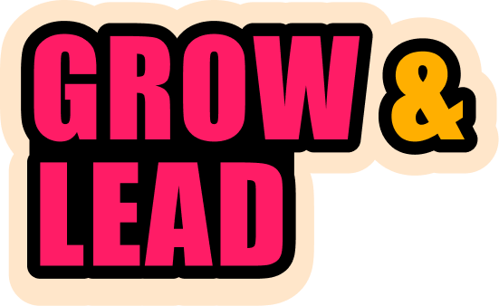
El problema principal cuando inicio este proyecrto fue la falta de coordinación y respaldo de datos de trabajos en campo, lo que dificultaba el seguimiento y la gestión eficiente de los proyectos. ya que lo manejaban en hojas de Excel y chats en telegram, que aunque les funcionaba no era lo más eficiente ni organizado, por lo que se decidió implementar una solución y se inicio el desarrollo de una aplicación móvil utilizando Google Appsheet, que permitió centralizar la información, mejorar la comunicación y optimizar la gestión de los proyectos en campo. en el momento en que llego a la empresa ya se había desarrollado la aplicación y se estaba utilizando, pero se me asigno la tarea de mejorarla y agregarle nuevas funcionalidades, lo que me permitió aprender a utilizar esta plataforma y desarrollar habilidades en el diseño de interfaces y experiencia de usuario, así como en la gestión de datos y automatización de procesos. Este proyecto fue una gran oportunidad para aplicar mis conocimientos y contribuir a la mejora de los procesos internos de la empresa. entonces comenzamos primero en investigar lo que ya existia dentro de la Aplicación para poder empezar a enfocar prolemas directos para esto utilizamos:
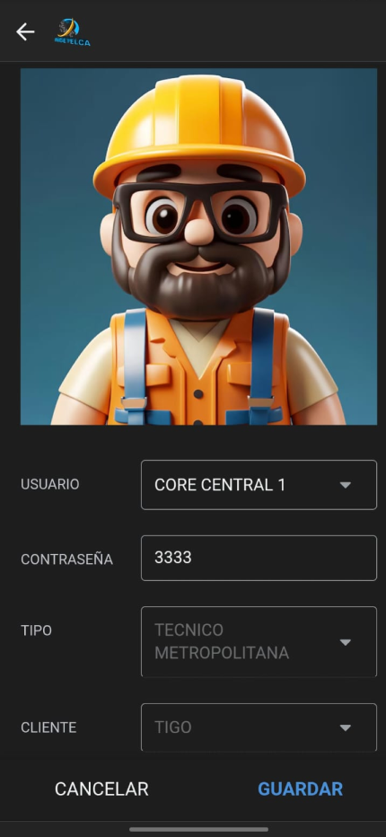
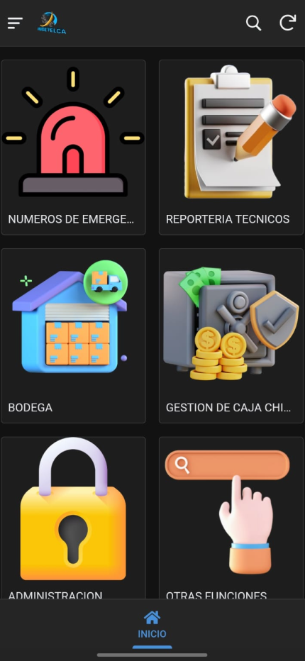
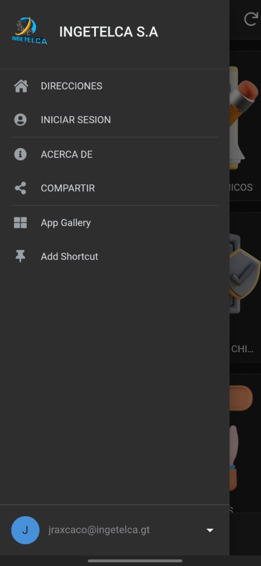
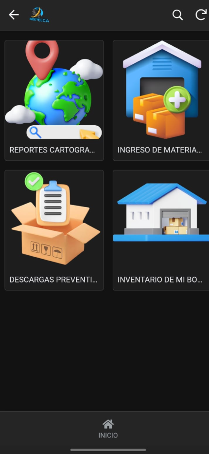
En este proyecto, más allá de una vista bonita, aprendí a escuchar y entender las necesidades tanto del usuario como de los supervisores a cargo de las áreas. Busqué un equilibrio entre la eficiencia en campo y la facilidad de uso, considerando que muchos usuarios no son expertos en tecnología. Por ello, me enfoqué en diseñar interfaces simples, intuitivas y funcionales.
En este proyecto se buscó una optimización mejorada en base a una aplicación de Google AppSheet, ya que la demanda creció y la estabilidad de Google AppSheet se quedaba corta. Entonces se decidió migrar a una aplicación nativa desarrollada en React Native, lo que permitió una mayor personalización, mejor rendimiento y una experiencia de usuario más fluida. En este proyecto se me asignó la tarea de diseñar la interfaz de usuario y mejorar la experiencia de usuario, lo que me permitió aplicar mis conocimientos en diseño UX/UI y aprender a trabajar con React Native. Este proyecto fue una gran oportunidad para contribuir a la mejora de los procesos internos de la empresa y desarrollar mis habilidades en el diseño y desarrollo de aplicaciones móviles. Entonces comenzamos primero en investigar lo que ya existía dentro de la aplicación para poder empezar a enfocar problemas directos; para esto utilizamos los siguientes procesos:
Esto nos permitio hacer no solo una mejora notable en la fluidez de la aplicación si no tambien reducimos procesos se realizaban en mas de dos cliscks a solo uno optimizando la productividad de los usuarios y mejorando la experiencia general de la aplicación.
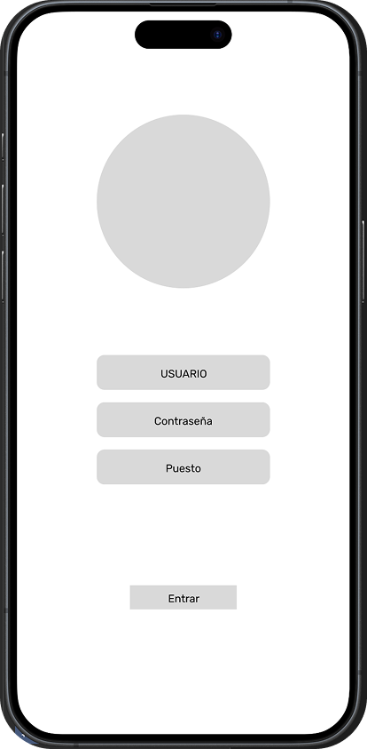
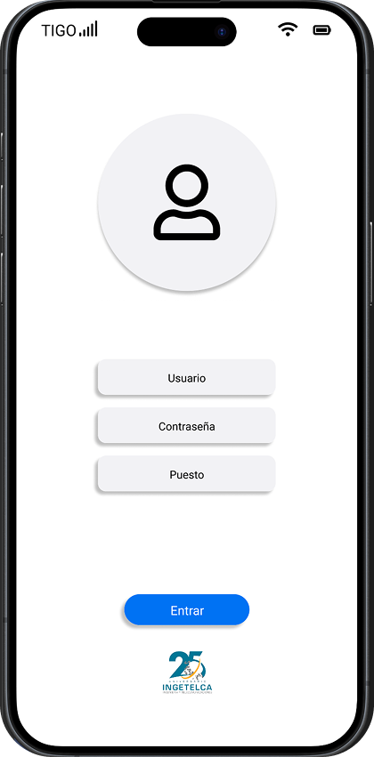
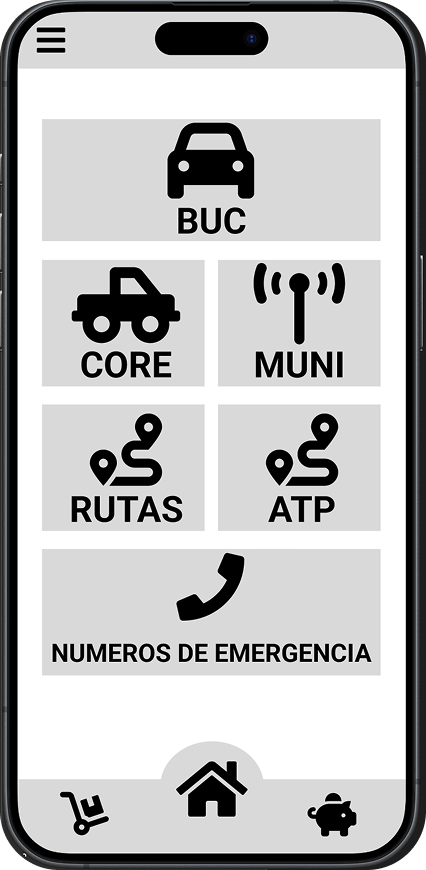
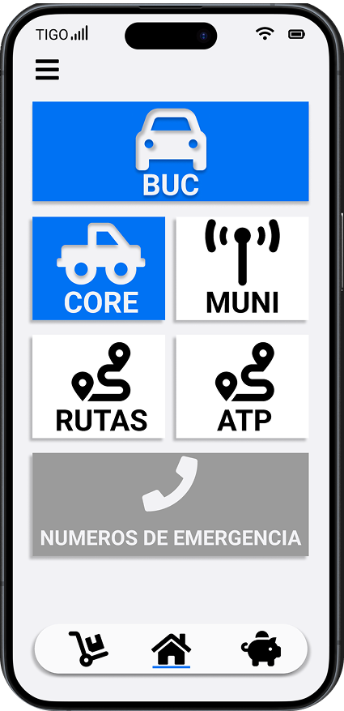
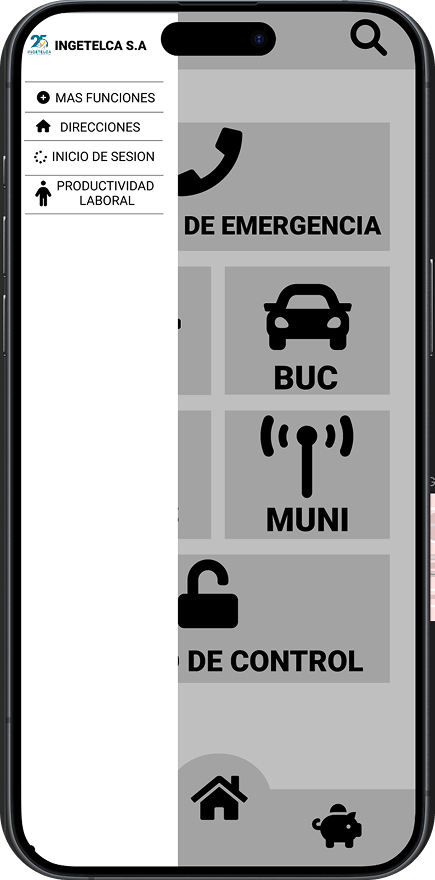
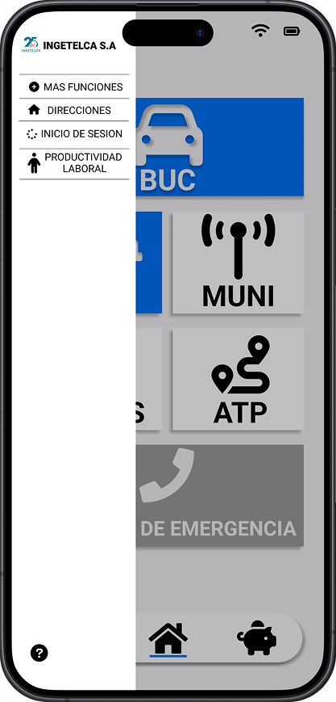
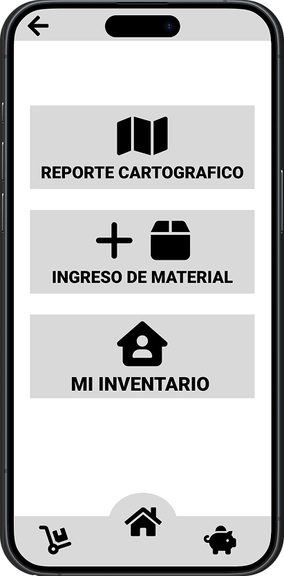
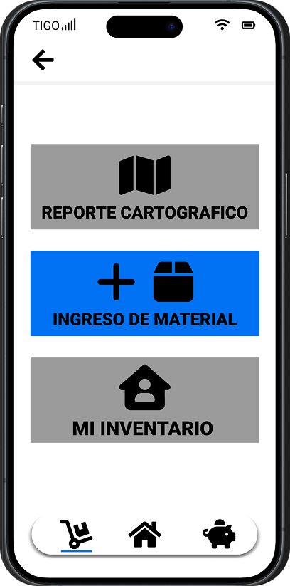
En este proyecto, aprendí a adaptar mis habilidades de diseño UX/UI a una nueva plataforma de desarrollo, lo que me permitió ampliar mi conocimiento en el diseño de interfaces y experiencia de usuario. Además, trabajar con Porgramadores de React Native me dio la oportunidad de entender mejor el proceso de desarrollo de aplicaciones en equipo, ya que anteriormente todos teniamos un solo sistema de trabajo en Google AppSheet ahora el equipo se dividio y me ayudo al trabajo y comunicación entre yo como diseñador y los programadores, lo que mejoró la colaboración y la eficiencia en el desarrollo de la aplicación.
Descripción del proyecto 3...
EXAMPLE